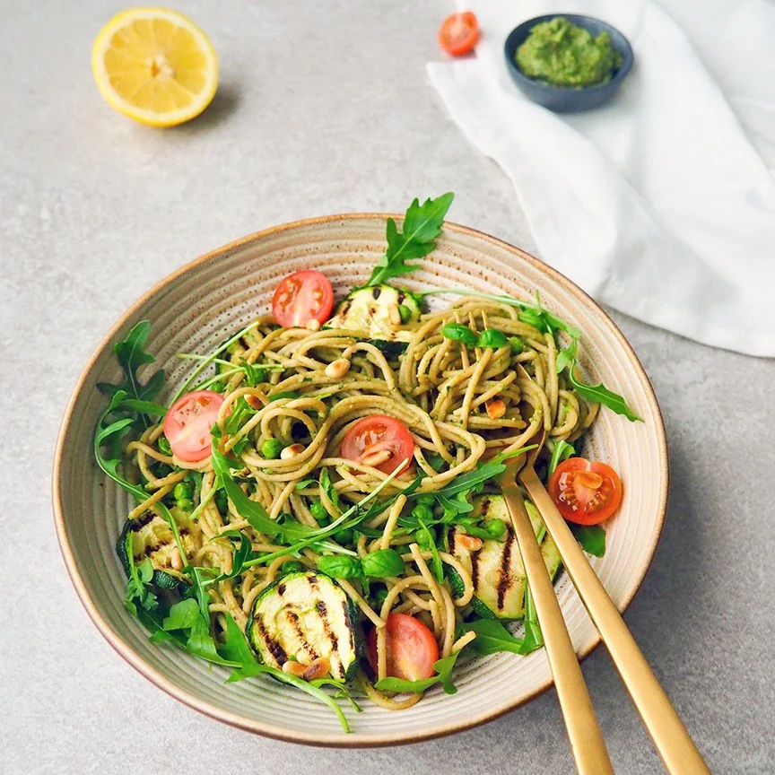

Vegan Pasta Pesto

Description
A delicious creamy vegan pasta pesto made with avocado pesto, grilled zucchini and peas
Ingredients
- 1 zucchini
- 200 grams of peas
- 300 grams of whole wheat pasta
- 1 avocado
- 2 handfuls of basil
- 20 grams of cashew nuts
- 10 grams of pine nuts
- Juice of ½ lemon
- 2 tablespoons nutritional yeast
- Pepper and salt
- Optional: extra pine nuts, cherry tomato and arugula
Steps
-
Toast the cashew nuts and pine nuts briefly in a pan until they are brown. Cook
the pasta according to the package.
-
Meanwhile, make the avocado pesto: in a food processor, blend the avocado,
garlic, basil, cashew nuts, pine nuts, nutritional yeast and lemon juice into
a creamy pesto. Season it with salt and pepper.
-
Cut the zucchini into slices and grill them in a grill pan until they have
nice stripes. When the pasta is cooked, drain it and mix in the pesto. Return
to low heat for a while and then add the peas, stir them into the pasta until
the peas have thawed.
-
Serve the pasta with the grilled zucchini and finish with pine nuts, cherry
tomatoes and arugula.
-
Tip: don't have a grill pan? You can also roast the zucchini in the oven. Mix
the zucchini slices with a little olive oil and put them in the oven for 20
minutes at 200 degrees.
Back to recipes overview